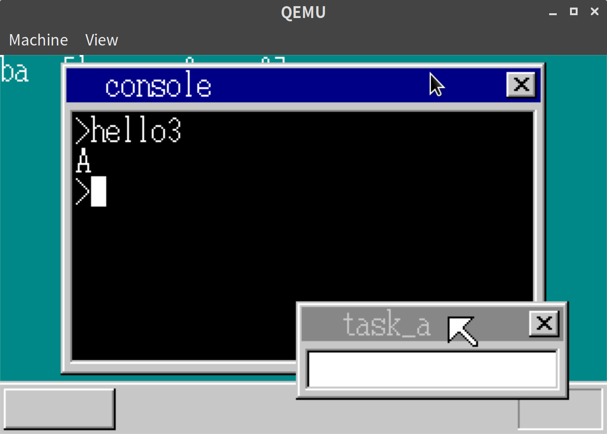
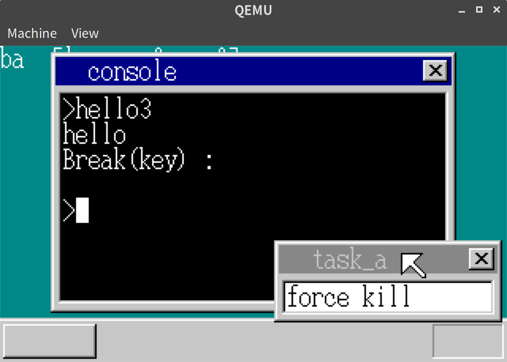
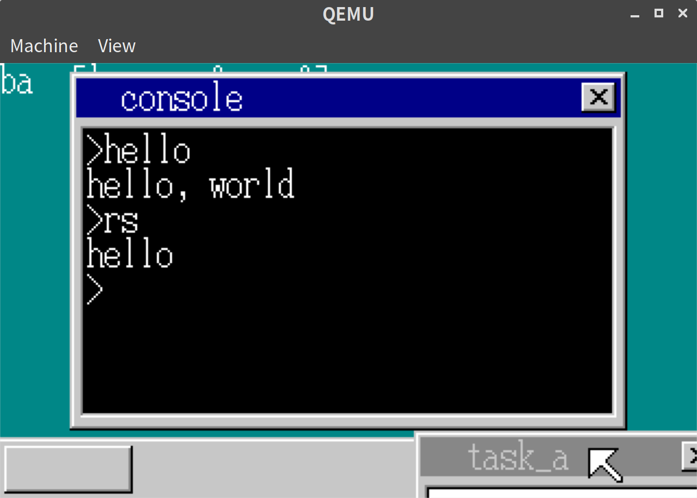
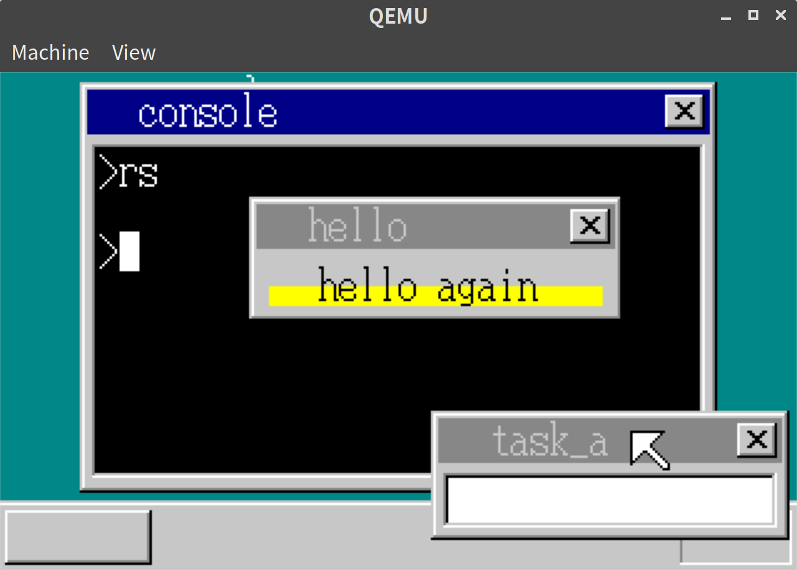

「30日でできる！OS自作入門」をRustで。22日目
「30日でできる！OS自作入門 」のC言語の部分をできるだけRustですすめてみる。今回は22日目の内容。
スタック例外を表示する
以下のようなコードをアプリケーションとして実行することを考える。
#[no_mangle]
#[start]
pub extern "C" fn haribote_os() {
let mut a: [u8; 100] = [0; 100];
let a_ptr = a.as_mut_ptr();
a[10] = b'A';
put_char(a[10]);
unsafe { *a_ptr.add(102) = b'B'; }
put_char(unsafe { *a_ptr.add(102) });
unsafe { *a_ptr.add(123) = b'C'; }
put_char(unsafe { *a_ptr.add(123) });
end()
}a は通常の配列の値だが、bとcは無理やり配列からはみだしたメモリにアクセスしている。
実行してみるとAのみ表示された。

スタック例外を表示できるようにして、このようなアプリケーションを作ってしまった場合に気づけるようにする
// descriptor_table.rs
let idt = unsafe { &mut *((ADR_IDT + 0x0c * 8) as *mut GateDescriptor) };
*idt = GateDescriptor::new(exception_handler!(inthandler0c) as u32, 2 * 8, AR_INTGATE32);// console.rs
pub extern "C" fn inthandler0c(esp: *const usize) -> usize {
exception_handler(b"INT 0C: \n Stack Exception.\n", esp)
}
pub extern "C" fn inthandler0d(esp: *const usize) -> usize {
exception_handler(b"INT 0D: \n General Protected Exception.\n", esp)
}
pub extern "C" fn exception_handler(message: &[u8], esp: *const usize) -> usize {
let console_addr = unsafe { *(CONSOLE_ADDR as *const usize) };
let console = unsafe { &mut *(console_addr as *mut Console) };
let sheet_manager_addr = unsafe { SHEET_MANAGER_ADDR };
let sheet_manager = unsafe { &mut *(sheet_manager_addr as *mut SheetManager) };
let sheet = sheet_manager.sheets_data[console.sheet_index];
console.newline();
console.put_string(message.as_ptr() as usize, message.len(), 8);
write_with_bg!(
sheet_manager,
console.sheet_index,
sheet.width,
sheet.height,
8,
console.cursor_y,
Color::White,
Color::Black,
30,
"EIP = {:>08X}",
unsafe { *((esp as usize + 11) as *const usize) }
);
console.newline();
let task_manager = unsafe { &mut *(TASK_MANAGER_ADDR as *mut TaskManager) };
let task_index = task_manager.now_index();
let task = &task_manager.tasks_data[task_index];
return unsafe { &(task.tss.esp0) } as *const i32 as usize;
}QEMUでしか起動していないが、本にある通り、QEMUのバグのせいなのか、動作確認はできていない。動いていることにして、次にいく。
アプリケーションを強制停止できるようにする
アプリケーションが無限ループになっている場合など、OSに強制的に制御を戻したい場合に強制停止できるようにする。 これまでの資産が使えるので本にならってShift+F1で強制停止できるようにした。
// lib.rs
#[no_mangle]
#[start]
pub extern "C" fn haribote_os() {
// 省略
loop {
// Shift + F1 でアプリケーションを強制終了
{
let mut console_task_mut = &mut task_manager.tasks_data[console_task_index];
if key == 0x3b
&& (key_shift.0 == true || key_shift.1 == true)
&& console_task_mut.tss.ss0 != 0
{
let console_addr = unsafe { *(CONSOLE_ADDR as *const usize) };
let console = unsafe { &mut *(console_addr as *mut Console) };
let message = b"\nBreak(key) :\n";
console.put_string(message.as_ptr() as usize, message.len(), 8);
cli();
// EAXにtssのESP0をセットしてend_appを実行する。
// 基本的にアプリケーションからOSにもどるときの動作と同じ
console_task_mut.tss.eax = &console_task_mut.tss.esp0 as *const i32 as i32;
console_task_mut.tss.eip = end_app as i32;
sti();
}
}
}
}アプリが動いてないときに誤動作しないように、アプリからOSにもどるときはss0がかならず0になるようにする。
// asm.rs
#[naked]
pub extern "C" fn end_app() {
unsafe {
asm!("MOV ESP,[EAX]
MOV DWORD PTR [EAX+4],0
POPAD" : : : : "intel");
}
}動作確認
試しにアプリケーションコードとしてRustで以下のようにしてみる。
#[no_mangle]
#[start]
pub extern "C" fn haribote_os() {
put_char(b'h');
put_char(b'e');
put_char(b'l');
put_char(b'l');
put_char(b'o');
loop {
}
end()
}するとhelloを表示した時点で表示が止まるもののShift+F1でコンソールにもどってこれる。

アプリケーションのメタ情報を読み込む
例えば、以下のようなアプリケーションを実行する。
#[no_mangle]
#[start]
pub extern "C" fn hrmain() {
put_string(b"hello".as_ptr() as usize);
end()
}
#[naked]
fn put_string(string_ptr: usize) {
// 文字列を描画するシステムコールを使う
unsafe {
asm!("MOV EDX,2
MOV EBX,[$0]
INT 0x40" : : "r"(&string_ptr) : : "intel");
}
}すると何も表示されない。
これはデータセグメントに本来あるべきデータが現状ないからである。これを修正する。
// console.rs
pub fn cmd_app<'a>(&mut self, filename: &'a [u8], fat: &[u32; MAX_FAT]) {
let memman = unsafe { &mut *(MEMMAN_ADDR as *mut MemMan) };
let mut finfo = search_file(filename);
if finfo.is_none() && filename.len() > 1 && filename[filename.len() - 2] != b'.' {
let mut filename_ext = [b' '; MAX_CMD + 4];
let filename_ext = &mut filename_ext[0..(filename.len() + 4)];
filename_ext[..filename.len()].copy_from_slice(filename);
filename_ext[filename.len()] = b'.';
filename_ext[filename.len() + 1] = b'h';
filename_ext[filename.len() + 2] = b'r';
filename_ext[filename.len() + 3] = b'b';
finfo = search_file(filename_ext);
}
if finfo.is_none() {
self.display_error("Bad Command");
return;
}
let finfo = finfo.unwrap();
let content_addr = memman.alloc_4k(finfo.size).unwrap() as usize;
finfo.load_file(content_addr, fat, ADR_DISKIMG + 0x003e00);
// kernel.ldを使ってリンクされたファイルのみ実行可能
let mut app_eip = 0;
let content_gdt = 1003;
let app_gdt = 1004;
let mut app_mem_addr = 0;
if finfo.size >= 8 {
// 4から7バイト目で判定
let bytes = unsafe { *((content_addr + 4) as *const [u8; 4]) };
if bytes == *b"Hari" {
app_eip = 0x1b;
// データセグメントの大きさ指定などメタ情報の読み込み
let segment_size = unsafe { *((content_addr + 0x0000) as *const usize) };
let esp = unsafe { *((content_addr + 0x000c) as *const usize) };
let data_size = unsafe { *((content_addr + 0x0010) as *const usize) };
let content_data_addr = unsafe { *((content_addr + 0x0014) as *const usize) };
let app_mem_addr = memman.alloc_4k(segment_size as u32).unwrap() as usize;
let ptr = unsafe { &mut *(CS_BASE_ADDR as *mut usize) };
*ptr = app_mem_addr;
let gdt = unsafe { &mut *((ADR_GDT + content_gdt * 8) as *mut SegmentDescriptor) };
*gdt = SegmentDescriptor::new(
finfo.size - 1,
content_addr as i32,
AR_CODE32_ER + 0x60,
);
let gdt = unsafe { &mut *((ADR_GDT + app_gdt * 8) as *mut SegmentDescriptor) };
*gdt = SegmentDescriptor::new(
segment_size as u32 - 1,
app_mem_addr as i32,
AR_DATA32_RW + 0x60,
);
// ファイル内のデータをデータセグメントにコピー
for i in 0..data_size {
let app_ptr = unsafe { &mut *((app_mem_addr + esp + i) as *mut u8) };
*app_ptr = unsafe { *((content_addr + content_data_addr + i) as *const u8) };
}
}
}
// hrb形式の場合のみ実行
if app_eip > 0 {
let esp0_addr: usize;
let task_manager = unsafe { &mut *(TASK_MANAGER_ADDR as *mut TaskManager) };
let task_index = task_manager.now_index();
let task = &task_manager.tasks_data[task_index];
let esp0_addr = unsafe { &(task.tss.esp0) } as *const i32 as usize;
unsafe {
_start_app(
app_eip,
content_gdt * 8,
APP_MEM_SIZE as i32,
app_gdt * 8,
esp0_addr as i32,
);
}
self.newline();
} else {
self.display_error("Bad Format");
}
memman.free_4k(content_addr as u32, finfo.size).unwrap();
if app_mem_addr > 0 {
memman
.free_4k(app_mem_addr as u32, APP_MEM_SIZE as u32)
.unwrap();
}
}まず、これまでアプリケーションファイルの拡張子も.binにしていたが、紛らわしくなってきたので、.hrbと本にそろえるようにした。
次に、ファイル内のメタ情報を読み込み、データセグメントを読み込めるようにした。
また、これからはkernel.ldでリンクした.hrbファイルしか実行できないようになったので、エントリポイント名もharibote_osからhrmainにしておく。
Rustで書いたアプリケーションはrs.hrbにリネームされるようにた。
# Makefile
$(OUTPUT_DIR)/%.bin: $(ASM_DIR)/%.asm Makefile $(OUTPUT_DIR_KEEP)
nasm $< -o $@
$(OUTPUT_DIR)/%.hrb: $(ASM_DIR)/%.asm Makefile $(OUTPUT_DIR_KEEP)
nasm -f elf $< -o $(OUTPUT_DIR)/$*.o
ld -v -nostdlib -m elf_i386 -Tdata=0x00310000 -Tkernel.ld $(OUTPUT_DIR)/$*.o -o $@
$(IMG) : $(OUTPUT_DIR)/ipl.bin $(OUTPUT_DIR)/haribote.sys $(OUTPUT_DIR)/hello.hrb $(OUTPUT_DIR)/rs.hrb Makefile
mformat -f 1440 -C -B $< -i $@ ::
mcopy $(OUTPUT_DIR)/haribote.sys -i $@ ::
mcopy $(OUTPUT_DIR)/hello.hrb -i $@ ::
mcopy $(OUTPUT_DIR)/rs.hrb -i $@ ::元々のhello.asmも変更して以下のようにkernel.ldでリンクできるようにした。
; hello.asm
[BITS 32]
GLOBAL hrmain
[SECTION .text]
hrmain:
MOV EDX,2
MOV EBX,msg
INT 0x40
MOV EDX,4
INT 0x40
[SECTION .data]
msg:
DB "hello, world", 0x0a, 0動作確認
実行してみると、Rustで書いたアプリケーションでも文字列を描画するシステムコールを呼べるようになったことがわかる。

アプリケーションからウィンドウ描画
システムコールの種類を増やし、アプリケーションからウィンドウの描画、ウィンドウ内に文字描画、矩形描画ができるようにする。
#[no_mangle]
pub extern "C" fn hrb_api( // <- bin_apiから名前変更
edi: i32,
esi: i32,
ebp: i32,
esp: i32,
ebx: i32,
edx: i32,
ecx: i32,
eax: i32,
) -> usize {
// 省略
let sheet_manager = unsafe { &mut *(console.sheet_manager_addr as *mut SheetManager) };
// POPADでアプリケーションに値を渡せるように、registerの番地をとっておく
let reg = &eax as *const i32 as usize + 4;
// 省略
} else if edx == 5 {
// ウィンドウの描画
let sheet_index = sheet_manager.alloc().unwrap();
{
let new_sheet = &mut sheet_manager.sheets_data[sheet_index];
new_sheet.set(ebx as usize + ds_base, esi, edi, to_color(eax as i8));
}
let title = unsafe { *((ecx as usize + ds_base) as *const [u8; 30]) };
let mut t = title.iter().take_while(|t| **t != 0);
let mut i = 0;
for n in 0..30 {
i = n;
if t.next().is_none() {
break;
}
}
make_window(
ebx as usize + ds_base,
esi as isize,
edi as isize,
from_utf8(&title[0..i]).unwrap(),
false,
);
sheet_manager.slide(sheet_index, 100, 50);
sheet_manager.updown(sheet_index, Some(3));
// アプリケーションにsheet_indexを返す
let reg_eax = unsafe { &mut *((reg + 7 * 4) as *mut i32) };
*reg_eax = sheet_index as i32;
} else if edx == 6 {
// ウィンドウ内に文字描画
let sheet_index = ebx as usize;
let sheet = sheet_manager.sheets_data[sheet_index];
let string = unsafe { *((ebp as usize + ds_base) as *const [u8; 30]) };
use crate::vga::ScreenWriter;
use core::fmt::Write;
let mut writer = ScreenWriter::new(
Some(sheet.buf_addr),
to_color(eax as i8).unwrap(),
esi as usize,
edi as usize,
sheet.width as usize,
sheet.height as usize,
);
write!(writer, "{}", from_utf8(&string[0..(ecx as usize)]).unwrap()).unwrap();
sheet_manager.refresh(sheet_index, esi, edi, esi + ecx * 8, edi + 16);
} else if edx == 7 {
// ウィンドウ内に矩形描画
let sheet_index = ebx as usize;
let sheet = sheet_manager.sheets_data[sheet_index];
boxfill(
sheet.buf_addr,
sheet.width as isize,
to_color(ebp as i8).unwrap(),
eax as isize,
ecx as isize,
esi as isize,
edi as isize,
);
sheet_manager.refresh(sheet_index, eax, ecx, esi + 1, edi + 1);
}OSからアプリケーション側への値の受け渡し以外は難しいところはない。
これを使って、アプリケーション側では以下のようにしてみる。
// hello/src/lib.rs
#[no_mangle]
#[start]
pub extern "C" fn hrmain() {
let buf: [u8; 150 * 50] = [0; 150 * 50];
let sheet_index = open_window(
buf.as_ptr() as usize,
150,
50,
-1,
b"hello".as_ptr() as usize,
);
box_fil_window(sheet_index as usize, 8, 36, 141, 43, 3);
put_str_window(
sheet_index as usize,
28,
28,
0,
12,
b"hello again".as_ptr() as usize,
);
end()
}
#[no_mangle]
fn open_window(
buf_addr: usize,
xsize: usize,
ysize: usize,
background_color: i8,
title_addr: usize,
) -> i32 {
let mut ret: i32;
unsafe {
asm!("
MOV EDX,5
INT 0x40
" : "={EAX}"(ret) : "{EBX}"(buf_addr), "{ESI}"(xsize), "{EDI}"(ysize), "{EAX}"(background_color as i32), "{ECX}"(title_addr) : : "intel");
}
ret
}
fn put_str_window(sheet_index: usize, x: i32, y: i32, color: i32, len: usize, string_addr: usize) {
unsafe {
asm!("
MOV EDX,6
INT 0x40
" : : "{EBX}"(sheet_index), "{ESI}"(x), "{EDI}"(y), "{EAX}"(color), "{ECX}"(len), "{EBP}"(string_addr) : : "intel");
}
}
fn box_fil_window(sheet_index: usize, x0: i32, y0: i32, x1: i32, y1: i32, color: i32) {
unsafe {
asm!("
MOV EDX,7
INT 0x40
" : : "{EBX}"(sheet_index), "{EAX}"(x0), "{ECX}"(y0), "{ESI}"(x1), "{EDI}"(y1), "{EBP}"(color) : : "intel");
}
}本の中ではアプリケーションのシステムコール前と後に PUSH 、 POP してレジスタの値を保存していたが、インラインアセンブリで書くと、(nakedをつけない限り)勝手に前後にPUSH POPをつけてくれるので、明示的に書く必要はなかった。
実行結果
以下の通り、新しいウィンドウと文字や矩形を描画できた。

22日目は以上となる。ここまでの内容のコードはyoshitsugu/hariboteos_in_rustのday22としてタグを打ってある。